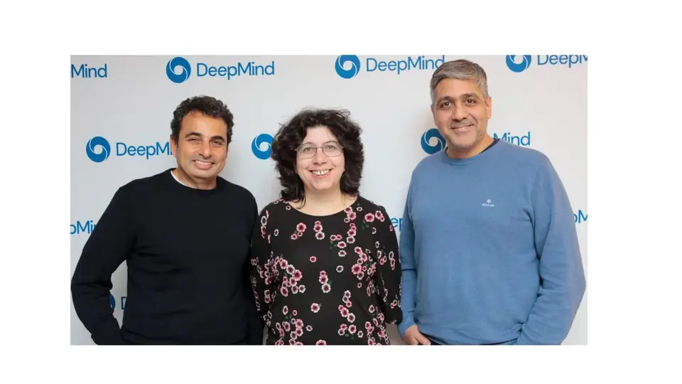

Google hands 200 European researchers its best AI models and $3M in compute — Brussels picks who gets in
Google DeepMind and Google Cloud announced on Wednesday that they will give up to 200 European scientific researchers direct access to their frontier AI models — plus $3M in compute credits to run them. The catch, if you can call it that: Google doesn’t pick the winners. The European Commission selects the researchers under its Resource for AI Science in Europe (RAISE) program, and the package opens up AlphaFold 3, WeatherNext, AlphaGenome, AlphaEvolve and AlphaEarth Foundations.
Models plus money
The offer has two halves: access to Google’s most advanced AI models and the cloud computing power needed to actually run them — a shared pool of $3M in compute credits for the 200 researchers, according to Reuters’ reporting on the announcement. It’s a direct answer to one of academia’s oldest complaints: the best models live behind corporate APIs and compute bills that university labs can’t pay.
“By delivering vital compute power and state-of-the-art tools directly to research teams, this effort aims to accelerate the pace of European innovation and reinforce the continent’s scientific competitiveness,” Google said in a statement released at an AI summit in Dublin, per AFP’s coverage.
The scientific lineup
The named tools read like a DeepMind greatest-hits collection, spanning molecular biology to the weather:
AlphaFold 3 for predicting protein and molecular structures; WeatherNext for weather forecasting and extreme-weather prediction; AlphaGenome for genomic variant analysis; AlphaEvolve for algorithm discovery and improvement; and AlphaEarth Foundations for geospatial analysis and Earth observation.
Why Brussels holds the guest list
Putting selection in the European Commission’s hands matters. It turns a corporate donation into a public-sector research program: Brussels aligns the grants with the bloc’s research priorities, while Google supplies the models and the compute. As Crypto Briefing’s breakdown of the announcement notes, the setup gives the initiative a public-sector filter — Google provides the infrastructure, the Commission decides who uses it.
The timing is pointed. The announcement lands as Europe pushes for tighter AI oversight following a series of security incidents — AFP notes the move came “ as demands for greater regulation of AI have increased” — and as the EU’s AI Act reshapes how American labs operate on the continent. Funding 200 EC-vetted scientists is also a pipeline play: a generation of researchers trained on Google’s stack is a generation that builds on it.

What we don’t know yet
The announcement doesn’t spell out the rollout timeline, the selection criteria beyond EC stewardship, or exactly which “frontier models” beyond the five named scientific tools are included — Seeking Alpha’s report on the news describes the grant as covering frontier models plus the credits, without itemizing further. Nor is there any independent measure yet of what 200 well-equipped researchers will produce. But the precedent is set: the bottleneck in European AI science isn’t ideas, it’s access — and today Google put $3M of access on the table, with Brussels dealing the cards.